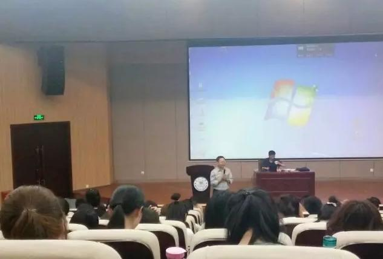
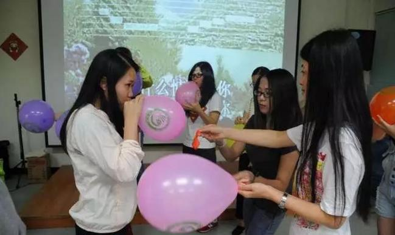

每日一篇——志愿者感悟/ 我在厦门大学的培训生活
 1,574
1,574
来源：原创 作者：杜彩兵
转眼，在孔子学院总部/国家汉办汉语国际推广南方基地——厦大翔安校区培训已度过了第一个星期。忙碌时，很容易忘记时间。几天紧张的学习，终于换来今天这个难得的放松时刻。清晨，唤醒我的是窗外清脆悦耳的鸟鸣，而不是枕边烦人的闹钟。一杯清茶，明亮的落地窗，舒缓的音乐，凉爽的风，让人神清气爽，终于可以静坐窗边，尽情地享受一个人的慢时光……
【学习篇】
看到第一周的课表时，有些傻眼了，星期一到星期五，早晨8:30到晚上8:30，除了用餐时间，基本上都要在教室度过。这么密密麻麻的课程安排，对我这颗小心脏简直是一个巨大的挑战，只能默默对自己说“让暴风雨来的更猛烈些吧”！虽然已经预料到接下来的日子不好过了，心里还是充满期待的，毕竟那么多内容丰富的课程、未曾谋面的培训老师……事实表明，所有的期待都是值得的。虽然一天到晚的课结束后感觉很累，但是第二天上课的热情丝毫不减。
第一周的培训内容主要是理想信念和志愿精神、教学与管理、赴任指导与才艺三个方面。南方基地的每一位培训老师都是厦大和其他高校请来的重量级人物，有多年丰富的海外教学经验和培训经验，比如土耳其中欧技术大学孔子学院首创院长郑启五老师；厦大外文系副院长、长期在英国教学的傅似逸教授；厦大新闻发言人、厦大党委宣传部部长、厦大马克思主义学院徐进功教授、国家高级茶艺培训师、南方基地万宇老师……每次听完他们的课，都会感到心潮澎湃。
最令我感动的是郑启五老师，他已近高龄，走路颤颤巍巍，但是站上讲台却依然神采飞扬、风趣幽默、有很大的感染力。他反复跟我们说：“世界是你们的，也是我们的，但归根结底是你们的”。还有徐进功老师，谈到教育的重要性时，他分享他自己因“一句承诺——让父母过上最有尊严的生活”而“被迫”用功读书的故事，细节处最感人，听着听着，就会眼眶灼热、视线模糊。

【生活篇】
还得从5月7号报到那天说起。交了材料领了钥匙，拖着沉重的行李箱爬上博学11四楼，打开房间门的时候，路上的那份疲惫似乎一下子烟消云散了。有种住进星级酒店的感觉，宽敞明亮的室内环境、摆放到位的生活用品、独立卫生间、落地窗、空调、阳台。
来的时候带很多生活用品的伙伴们该哭笑不得了。更夸张的是，卫生每天也有阿姨来打扫，其实一个人住卫生可以可以很好的保持，完全没有必要麻烦那些阿姨。但是这一切说明一个问题：孔子学院总部/国家汉办、南方基地对每一位学员的照顾和重视。
除了优质的住宿条件，学校还给每位学员一张消费卡，第一次去食堂刷卡，被里面的数字震惊到了，饭卡从来没有这么“土豪”过！每天50元的餐补已经很奢侈了。食堂饭菜很可口，完全能适应闽南人的口味。超市就在食堂负一楼，凭卡消费，方便快捷。
相比之下，出行不是太方便，看不到小黄车，想骑车只能自己租。考虑到天气太热要撑伞遮阳，只好选择安步当车，不过正好，每天都能“行万步路”，一般都得提前一小时出发。

【参观校本部——思明校区】
周六虽然不上课，却也不能清闲。七点钟就坐上能容纳62人的校车从翔安校区出发，先是前往厦门市国际旅行卫生保健中心体检。接着是去参观校本部。去校本部的路上，透过玻璃窗，第一次见到了幻想过无数次的码头和渡轮，高高扬起的白帆、波光粼粼的海面、探出水面的岩石、穿制服的帅气海军。有种跳下车的冲动，车还是无情的走远了，我的心情却久久不能平复。
一会功夫车就开进了思明校区。下车的那一瞬间，有些不敢相信自己真的亲身来到这所被誉为“南方之强”、“中国最美校园”的厦大本部。吃完午餐，我们首选的参观目标是传说中充满文艺气息的芙蓉隧道，隧道全长1.1公里，站在入口，一眼望不到尽头。参观的人很多，眼球一下子就被两边墙壁上色彩斑斓的涂鸦作品吸引了，刚开始看有种天马行空的感觉，慢慢欣赏，在赞叹厦大学子们智慧和才情的同时，有一种温馨的感动，也许同是青年人，有比较相似的经历，也能唤起强烈的共鸣。
原本打算校园的每一个角落都要去看看，也不枉此行。可是出了隧道才发现下起了雨，而且越下越大，手机上雷电黄色预警信号一再提醒。我们只好就近选了一个咖啡馆，里面除了突然闯进去躲雨的人，大多数是坐在一起深入交谈的年轻人，气氛非常融洽。厦大的咖啡馆随处可见，感谢有这么优雅的地方收留我们，平时常喝速溶，今天必须要点一杯意大利浓缩咖啡，慢慢品尝，装作自己也是厦大人。
雨终于停了，也到了我们离开的时候了。停留的时间很短暂，厦大留给我最深刻印象有两个：闽南式大屋顶与西式外廊巧妙结合的独特、新奇的建筑风格；随处可见的咖啡屋彰显出的浓厚的校园大众咖啡文化，以及这种文化所体现出的气氛轻松、积极主动、自由开放的学术氛围。
接下来五周的培训生活一定是紧张而忙碌的，也一定是精彩而充实的。会好好珍惜在厦大的每一分每一秒——学习、成长、铭记、感恩……
作者简介：
杜彩兵： 浙江师范大学国际文化与教育学院2016级汉硕，莫桑比克蒙德拉内大学孔子学院汉语教师志愿者储备人员。